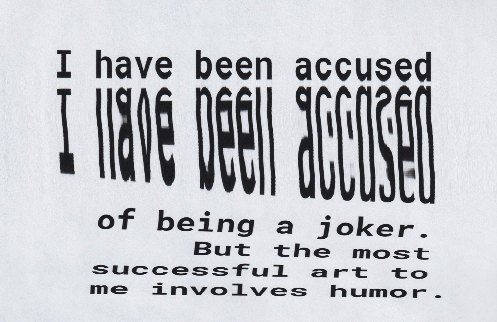
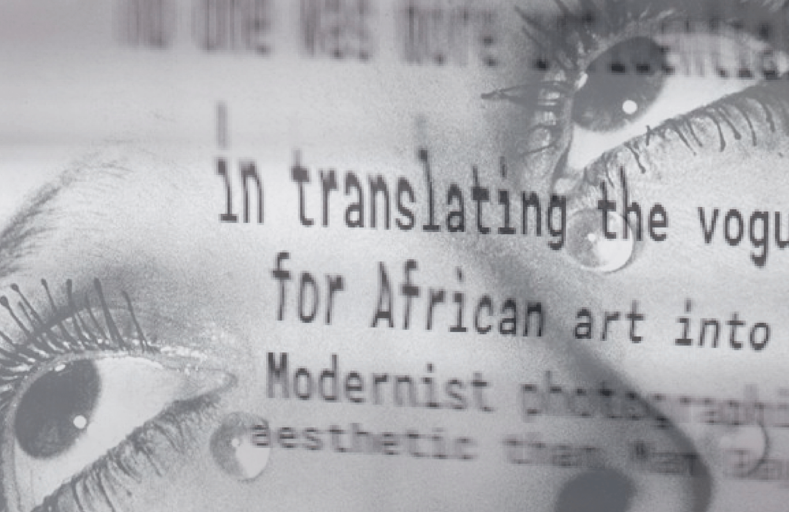

01/ home
02/ man ray
03/ the book

About
Man Ray: Prophet of the Avant-Garde
Integrating experimental typography and imagery into Man Ray’s iconic rayographs
explore the book

A Significant Contributor to the Dada and Surrealist Movements
“No one was more influential in translating the vogue for African art into a Modernist photographic aesthetic than Man Ray.”
more about man ray
Gallery
Discover the Visionary World of Man Ray
view more works
Noie et Blanche
1926
Gala Dali and “The Birth of Liquid Desires”
1935